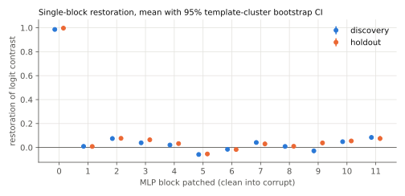
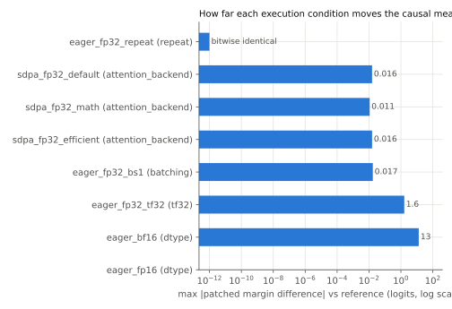
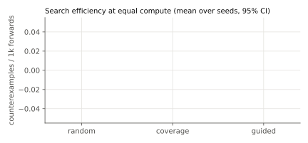

pythia160m_ioi_mlp0_extended_embedding_v1Status: inconclusive
In Pythia-160m on IOI with an S2-flip corruption, MLP block 0 acts as an extended token embedding. Restoring its clean output at every position carries the second-subject identity forward and restores most of the answer-minus-distractor logit contrast.
Mechanism: MLP 0 output at the S2 token encodes which name occupies that position; later attention reads it to decide which name was repeated.
Unit: MLP block 0 output (all positions)
Model: EleutherAI/pythia-160m @ 50f5173d932e8e61f858120bcb800b97af589f46
Scope: 16 registered IOI templates (8 discovery, 8 holdout), 40 single-token first names split 30/10, 12 places, 10 objects, both name orders (float32, backends eager, sdpa)
Search found 0 counterexamples. None were minimized.
| id | kind | split | outcome | evidence |
|---|---|---|---|---|
| mean_restoration | restoration_at_least | holdout | pass | mean restoration CI [0.985, 1.013] >= 0.5 |
| per_case_restoration | restoration_at_least | holdout | pass | 0/133 cases below 0.25; rate CI high 0.028 <= 0.05 |
| strongest_block | in_top_k | holdout | pass | components in top-1 in 100.0% of resamples |
| gate | ok | detail |
|---|---|---|
| model_revision_pinned | True | revision '50f5173d932e8e61f858120bcb800b97af589f46', loaded commit '50f5173d932e8e61f858120bcb800b97af589f46' |
| reference_dispatch_verified | True | ok |
| task_validity | True | valid cases per split {'discovery': 154, 'holdout': 133}, need 30 |
| identity_patch_null | True | max |identity patch - corrupt| = 0 |
| split | generated | valid | rejections (a case can have several) |
|---|---|---|---|
| discovery | 160 | 154 | clean_does_not_prefer_answer: 5, corrupt_does_not_prefer_distractor: 1 |
| holdout | 160 | 133 | clean_does_not_prefer_answer: 12, contrast_below_threshold: 5, corrupt_does_not_prefer_distractor: 14 |

| split | layer | mean restoration | 95% CI | mean effect (logits) | n | templates |
|---|---|---|---|---|---|---|
| discovery | 0 | 0.986 | [0.977, 0.994] | 8.070 | 154 | 8 |
| discovery | 1 | 0.010 | [0.005, 0.013] | 0.079 | 154 | 8 |
| discovery | 2 | 0.074 | [0.058, 0.093] | 0.617 | 154 | 8 |
| discovery | 3 | 0.039 | [0.032, 0.046] | 0.325 | 154 | 8 |
| discovery | 4 | 0.021 | [0.013, 0.027] | 0.169 | 154 | 8 |
| discovery | 5 | -0.059 | [-0.070, -0.048] | -0.464 | 154 | 8 |
| discovery | 6 | -0.015 | [-0.023, -0.009] | -0.121 | 154 | 8 |
| discovery | 7 | 0.042 | [0.025, 0.058] | 0.337 | 154 | 8 |
| discovery | 8 | 0.009 | [0.002, 0.015] | 0.069 | 154 | 8 |
| discovery | 9 | -0.028 | [-0.048, -0.010] | -0.204 | 154 | 8 |
| discovery | 10 | 0.048 | [0.041, 0.056] | 0.410 | 154 | 8 |
| discovery | 11 | 0.084 | [0.065, 0.099] | 0.695 | 154 | 8 |
| holdout | 0 | 0.997 | [0.985, 1.013] | 7.382 | 133 | 8 |
| holdout | 1 | 0.009 | [0.004, 0.012] | 0.077 | 133 | 8 |
| holdout | 2 | 0.076 | [0.065, 0.090] | 0.564 | 133 | 8 |
| holdout | 3 | 0.064 | [0.049, 0.081] | 0.464 | 133 | 8 |
| holdout | 4 | 0.033 | [0.019, 0.046] | 0.240 | 133 | 8 |
| holdout | 5 | -0.054 | [-0.069, -0.037] | -0.391 | 133 | 8 |
| holdout | 6 | -0.017 | [-0.025, -0.009] | -0.107 | 133 | 8 |
| holdout | 7 | 0.030 | [0.010, 0.048] | 0.230 | 133 | 8 |
| holdout | 8 | 0.010 | [0.001, 0.017] | 0.086 | 133 | 8 |
| holdout | 9 | 0.038 | [0.020, 0.055] | 0.296 | 133 | 8 |
| holdout | 10 | 0.054 | [0.048, 0.062] | 0.409 | 133 | 8 |
| holdout | 11 | 0.075 | [0.056, 0.096] | 0.518 | 133 | 8 |
Every condition changes one factor relative to the reference. Measurements use the reference's set of valid cases so the denominator never moves.

| condition | factor | observed attention | classification | max d patched margin | max d clean logit | discovery top-k | prediction flips |
|---|---|---|---|---|---|---|---|
| eager_fp32_repeat | repeat | eager_matmul_softmax | bitwise_identical | 0.000 | 0.000 | [0, 2, 11] | none |
| sdpa_fp32_default | attention_backend | efficient | exceeds_tolerance_no_decision_change | 0.016 | 0.006 | [0, 2, 11] | none |
| sdpa_fp32_math | attention_backend | math | exceeds_tolerance_no_decision_change | 0.011 | 0.005 | [0, 2, 11] | none |
| sdpa_fp32_efficient | attention_backend | efficient | exceeds_tolerance_no_decision_change | 0.016 | 0.006 | [0, 2, 11] | none |
| sdpa_fp32_flash | attention_backend | none | not run | probe raised: No available kernel. Aborting execution. | |||
| eager_fp32_bs1 | batching | eager_matmul_softmax | exceeds_tolerance_no_decision_change | 0.017 | 0.006 | [0, 2, 11] | none |
| eager_fp32_tf32 | tf32 | eager_matmul_softmax | exceeds_tolerance_no_decision_change | 1.623 | 1.261 | [0, 2, 11] | none |
| eager_bf16 | dtype | eager_matmul_softmax | decision_changing | 13.136 | 11.112 | [0, 3, 10] | ['mean_restoration', 'per_case_restoration']; 135 cases with zero contrast |
| eager_fp16 | dtype | eager_matmul_softmax | decision_changing | nan | nan | [0, 1, 2] | ['mean_restoration', 'per_case_restoration', 'strongest_block']; 287 cases with zero contrast |
Every MLP's hidden channels permuted (seed 1). Output parity over all positions, full vocabulary, clean and corrupt: max |d logit| 0.007, argmax agreement 1.000, gate FAILED (tolerance atol + rtol * |logit| with rtol 0.0) at atol 0.001.
Comparisons skipped: output parity failed, the transform is not validated. The challenge counts as not validly run, so the mlp_channel_permutation invariance stays untested.

| strategy | seeds | counterexamples / 1k forwards | 95% CI | valid proposal rate | lowest restoration reached (mean over seeds) |
|---|---|---|---|---|---|
| random | 5 | 0.000 | [0.000, 0.000] | 0.970 | 0.829 |
| coverage | 5 | 0.000 | [0.000, 0.000] | 0.980 | 0.855 |
| guided | 5 | 0.000 | [0.000, 0.000] | 0.980 | 0.798 |
The claim's per-case threshold is 0.25. The last column shows how close each strategy pushed the claim towards failing within its budget of 900 forwards per seed, which matters most when no counterexample was found.
Counterexamples are drawn from the discovery axis space only. The holdout templates and names are never searched.
| challenge | invariance | valid | contradicts | summary |
|---|---|---|---|---|
| numerical:eager_fp32_repeat | repeat | True | False | bitwise_identical; prediction flips []; top-k [0, 2, 11] -> [0, 2, 11] |
| numerical:sdpa_fp32_default | attention_backend | True | False | exceeds_tolerance_no_decision_change; prediction flips []; top-k [0, 2, 11] -> [0, 2, 11] |
| numerical:sdpa_fp32_math | attention_backend | True | False | exceeds_tolerance_no_decision_change; prediction flips []; top-k [0, 2, 11] -> [0, 2, 11] |
| numerical:sdpa_fp32_efficient | attention_backend | True | False | exceeds_tolerance_no_decision_change; prediction flips []; top-k [0, 2, 11] -> [0, 2, 11] |
| numerical:eager_fp32_bs1 | batching | True | False | exceeds_tolerance_no_decision_change; prediction flips []; top-k [0, 2, 11] -> [0, 2, 11] |
| numerical:eager_fp32_tf32 | tf32 | True | False | exceeds_tolerance_no_decision_change; prediction flips []; top-k [0, 2, 11] -> [0, 2, 11] |
| numerical:eager_bf16 | out_of_scope | True | True | decision_changing; prediction flips ['mean_restoration', 'per_case_restoration']; top-k [0, 2, 11] -> [0, 3, 10] |
| numerical:eager_fp16 | out_of_scope | True | True | decision_changing; prediction flips ['mean_restoration', 'per_case_restoration', 'strongest_block']; top-k [0, 2, 11] -> [0, 1, 2] |
| numerical:sdpa_fp32_flash | attention_backend | False | False | not run: probe raised: No available kernel. Aborting execution. |
| symmetry | mlp_channel_permutation | False | False | parity failed: max |dlogit| 0.00702 |
| counterexamples | counterfactual_inputs | True | False | 0 unique counterexamples (0 reproduced); no minimized counterexample generalised to a failing sub-scope |
kerneltrace replay runs/20261101T151501Z_pythia160m_ioi_mlp0_c0789f25
torch 2.11.0+cu128 (CUDA 12.8), transformers 4.57.6, NVIDIA GeForce RTX 5060 Laptop GPU, driver 610.74, git 52ee56d734 (clean tree).